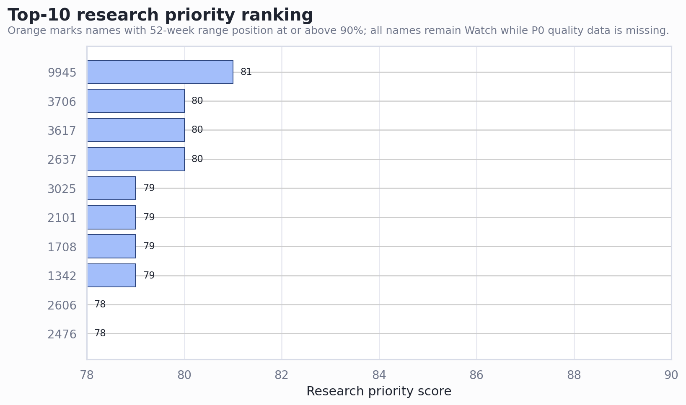
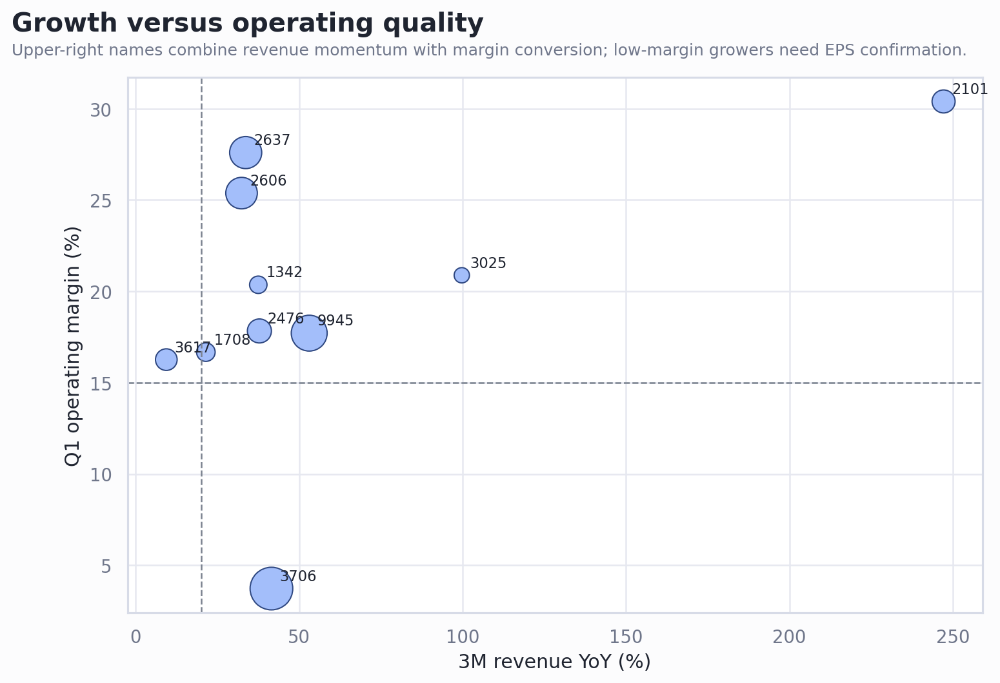
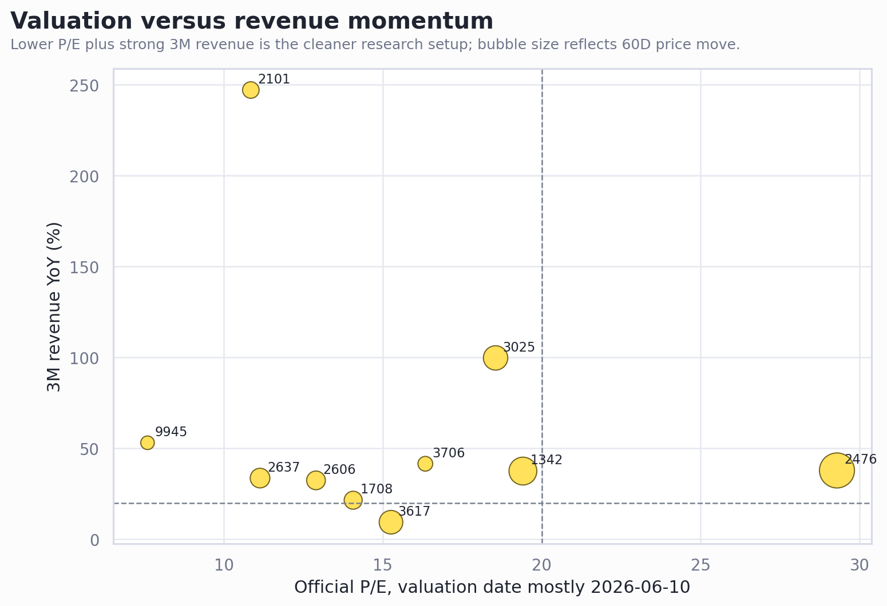
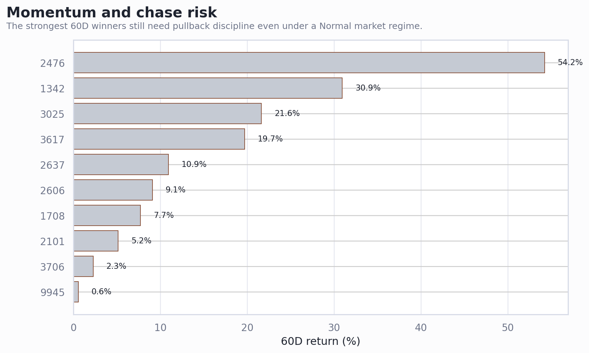

tw_stock_candidates_20260615 前 10 名個股詳細分析
產出日期：2026-06-15
分析層級：研究優先與個股深度追蹤，不構成個人化財務建議或買賣指令。
市場狀態：Normal；2026-06-15 加權指數 2.78%，依單日風險閘門處理。現階段前 10 名仍維持研究排序，不直接升級為可交易清單。
Executive Summary
- 前 10 名是研究順序，不是買進順序。 候選分數來自官方價格/估值、月營收、3M rolling 營收、Q1 margin/EPS、日價趨勢與融資融券 proxy；但 OCF/NI、應收、存貨、法人籌碼、借券與歷史估值 percentile 仍未補齊。
- 前十名已依最新候選表重排。 個別股票若缺人工模板，報告會標為研究待補，不把資料驅動摘要包裝成完整深度結論。
- 高分仍需拆成估值、品質、動能三件事驗證。 接近 52 週高位、60D 漲幅大、或營收尚未轉 EPS 的股票，仍需等回測或新財報確認。
- 持倉閘門偏保守。 本地持倉紀錄顯示剩餘 BDC、GEV 曝險仍集中，新買台股空間有限；所以本輪最佳動作偏向排程研究與等待驗證點。
前 10 名快速排序
| Rank | 代號 | 公司 | 產業 | 結論 | 分數 | 3M營收YoY | 營益率 | P/E | 60D | 52W位置 |
|---|---|---|---|---|---|---|---|---|---|---|
| 1 | 9945 | 潤泰新 | 其他 | 研究待補，先不升級 | 81 | 53.1% | 17.7% | 7.6 | 0.6% | 41.9% |
| 2 | 2637 | 慧洋-KY | 航運業 | 低 P/E 航運 Watch，先驗證運價 | 80 | 33.6% | 27.6% | 11.1 | 10.9% | 84.6% |
| 3 | 3617 | 碩天 | 其他電子 | 相對乾淨的收益/品質 Watch | 80 | 9.4% | 16.3% | 15.3 | 19.7% | 38.4% |
| 4 | 3706 | 神達 | 電腦及週邊設備 | 研究待補，先不升級 | 80 | 41.5% | 3.7% | 16.3 | 2.3% | 50.9% |
| 5 | 1342 | 八貫 | 其他 | 基本面強，但追價風險最高之一 | 79 | 37.5% | 20.4% | 19.4 | 30.9% | 84.5% |
| 6 | 1708 | 東鹼 | 化學工業 | 便宜成長候選，但先等營收止滑 | 79 | 21.5% | 16.7% | 14.1 | 7.7% | 87.6% |
| 7 | 2101 | 南港 | 橡膠工業 | 研究待補，先不升級 | 79 | 247.2% | 30.4% | 10.8 | 5.2% | 26.2% |
| 8 | 3025 | 星通 | 通信網路 | 研究待補，先不升級 | 79 | 99.8% | 20.9% | 18.6 | 21.6% | 75.1% |
| 9 | 2476 | 鉅祥 | 電子零組件 | 研究待補，先不升級 | 78 | 37.8% | 17.8% | 29.3 | 54.2% | 89.4% |
| 10 | 2606 | 裕民 | 航運業 | 低估值循環 Watch，可做基本面驗證 | 78 | 32.4% | 25.4% | 12.9 | 9.1% | 76.6% |
視覺證據




共同判斷
資料時點要拆開看。 候選表價格、估值與日價歷史本輪盡量對齊 2026-06-15；若個別股票仍有 price_date / valuation_date / trend_date 落差，估值只能視為對應日期參考。
共同硬缺口是財報品質。 前 10 名多數 P0 已取得 4/5，但仍缺 OCF/NI、應收帳款與存貨。這會影響所有低 P/E、高成長與題材轉財報判斷。
Normal regime 下，強勢仍不等於可追。 52 週位置或 60D 報酬已高的標的，需要用下一次月營收、Q2 margin、法人/融資與回測均線來確認。
個股詳細分析
1. 9945 潤泰新 - 研究待補，先不升級
一句話結論： 9945 潤泰新 進入本輪前十，但尚未有人工個股模板；先按 其他 候選處理，不把分數當買進訊號。
| 模組 | 核心數字 | 判斷 |
|---|---|---|
| 價格/時點 | 候選價 27.1（價格日 2026-06-15）；日價歷史參考 27.1（2026-06-15）；差異 0.0% | 估值日與價格日不同時，估值只能視為估值日參考 |
| 成長 | 月營收 YoY 72.0%、MoM 32.8%、3M YoY 53.1%、加速度 50.0 | 研究分數、營收/估值/技術欄位達到候選池前段，值得排入下一輪資料補強。 |
| 品質 | Q1 毛利率 24.7%、營益率 17.7%、淨利率 30.8%、EPS 0.99 | 缺 OCF/NI、應收與存貨，品質分不能升級為完整 A-List |
| 估值 | P/E 7.6、P/B 0.67、殖利率 4.1%、推算 TTM EPS 3.56 | 若估值日與價格日不同，歷史 percentile 與同業估值仍待補 |
| 股價/籌碼 | 20D 17.6%、60D 0.6%、52W 位置 41.9%、融資使用率 3.4% | 趨勢為 uptrend_confirmed；即使 market regime 為 Normal，越接近高位越需要等回測 |
Bear case first： 缺 OCF/NI、應收、存貨、法人籌碼、借券與完整估值 percentile；若僅靠單次排名或近期動能，容易誤判成可交易清單。
下一個驗證點： 補完整財報品質、籌碼與事件日曆後，再依 tw-stock-analysis-framework.md 重估 bear/base/bull 與風控價格帶。
已知缺口/風險： 低PE需排除景氣高峰；OCF/NI、應收、存貨仍待補；股價歷史日與候選價格日不同
2. 2637 慧洋-KY - 低 P/E 航運 Watch，先驗證運價
一句話結論： 慧洋-KY 有低 P/E、殖利率與 3M 營收成長，但航運股最怕景氣高峰假便宜，所以要先補運價與現金流。
| 模組 | 核心數字 | 判斷 |
|---|---|---|
| 價格/時點 | 候選價 79.2（價格日 2026-06-15）；日價歷史參考 79.2（2026-06-15）；差異 0.0% | 估值日與價格日不同時，估值只能視為估值日參考 |
| 成長 | 月營收 YoY 45.9%、MoM 10.4%、3M YoY 33.6%、加速度 11.0 | P/E 約 10.7、殖利率約 4.6%，3M 營收 YoY 約 33.6%，Q1 營益率高，融資使用率低。 |
| 品質 | Q1 毛利率 28.7%、營益率 27.6%、淨利率 27.6%、EPS 1.60 | 缺 OCF/NI、應收與存貨，品質分不能升級為完整 A-List |
| 估值 | P/E 11.1、P/B 1.17、殖利率 4.4%、推算 TTM EPS 7.11 | 若估值日與價格日不同，歷史 percentile 與同業估值仍待補 |
| 股價/籌碼 | 20D 8.8%、60D 10.9%、52W 位置 84.6%、融資使用率 1.6% | 趨勢為 uptrend_confirmed；即使 market regime 為 Normal，越接近高位越需要等回測 |
Bear case first： 若 BDI 或租金轉弱，營收與 EPS 會同步下修；52W 位置偏高，低 P/E 不代表追價安全。
下一個驗證點： 補 BDI/船型運價、OCF/NI 與負債結構；若月營收與運價同步走強，再進一步升級。
已知缺口/風險： OCF/NI、應收、存貨仍待補；股價歷史日與候選價格日不同；估值溫度過熱扣分4
3. 3617 碩天 - 相對乾淨的收益/品質 Watch
一句話結論： 碩天估值、殖利率、毛利率與 52 週位置相對均衡，是前十名裡比較不像已過熱的一檔。
| 模組 | 核心數字 | 判斷 |
|---|---|---|
| 價格/時點 | 候選價 215.5（價格日 2026-06-15）；日價歷史參考 215.5（2026-06-15）；差異 0.0% | 估值日與價格日不同時，估值只能視為估值日參考 |
| 成長 | 月營收 YoY 21.5%、MoM 5.6%、3M YoY 9.4%、加速度 14.6 | P/E 15.1、殖利率 4.7%，Q1 毛利率 53.9%、EPS 4.13，52 週區間位置只有約 40%。 |
| 品質 | Q1 毛利率 53.9%、營益率 16.3%、淨利率 13.3%、EPS 4.13 | 缺 OCF/NI、應收與存貨，品質分不能升級為完整 A-List |
| 估值 | P/E 15.3、P/B 2.23、殖利率 4.6%、推算 TTM EPS 14.12 | 若估值日與價格日不同，歷史 percentile 與同業估值仍待補 |
| 股價/籌碼 | 20D 13.4%、60D 19.7%、52W 位置 38.4%、融資使用率 8.1% | 趨勢為 uptrend_confirmed；即使 market regime 為 Normal，越接近高位越需要等回測 |
Bear case first： 3M 營收 YoY 只有 9.4%，成長動能不如其他候選；若沒有訂單或 margin 擴張，重估空間有限。
下一個驗證點： 補 OCF/NI 與存貨，確認高毛利能收現；若營收加速重啟，優先級會提升。
已知缺口/風險： OCF/NI、應收、存貨仍待補；股價歷史日與候選價格日不同；估值溫度偏熱扣分2
4. 3706 神達 - 研究待補，先不升級
一句話結論： 3706 神達 進入本輪前十，但尚未有人工個股模板；先按 電腦及週邊設備 候選處理，不把分數當買進訊號。
| 模組 | 核心數字 | 判斷 |
|---|---|---|
| 價格/時點 | 候選價 85.6（價格日 2026-06-15）；日價歷史參考 85.6（2026-06-15）；差異 0.0% | 估值日與價格日不同時，估值只能視為估值日參考 |
| 成長 | 月營收 YoY 49.3%、MoM 17.2%、3M YoY 41.5%、加速度 6.1 | 研究分數、營收/估值/技術欄位達到候選池前段，值得排入下一輪資料補強。 |
| 品質 | Q1 毛利率 9.2%、營益率 3.7%、淨利率 4.6%、EPS 1.10 | 缺 OCF/NI、應收與存貨，品質分不能升級為完整 A-List |
| 估值 | P/E 16.3、P/B 1.71、殖利率 4.7%、推算 TTM EPS 5.24 | 若估值日與價格日不同，歷史 percentile 與同業估值仍待補 |
| 股價/籌碼 | 20D 7.1%、60D 2.3%、52W 位置 50.9%、融資使用率 10.1% | 趨勢為 mixed；即使 market regime 為 Normal，越接近高位越需要等回測 |
Bear case first： 缺 OCF/NI、應收、存貨、法人籌碼、借券與完整估值 percentile；若僅靠單次排名或近期動能，容易誤判成可交易清單。
下一個驗證點： 補完整財報品質、籌碼與事件日曆後，再依 tw-stock-analysis-framework.md 重估 bear/base/bull 與風控價格帶。
已知缺口/風險： OCF/NI、應收、存貨仍待補；跌破20日線；股價歷史日與候選價格日不同；估值溫度偏熱扣分2
5. 1342 八貫 - 基本面強，但追價風險最高之一
一句話結論： 八貫營收、獲利與股利都很亮眼，但 52 週位置達 100%，現在更需要等，而不是急著追。
| 模組 | 核心數字 | 判斷 |
|---|---|---|
| 價格/時點 | 候選價 115.5（價格日 2026-06-15）；日價歷史參考 115.5（2026-06-15）；差異 0.0% | 估值日與價格日不同時，估值只能視為估值日參考 |
| 成長 | 月營收 YoY 37.2%、MoM -3.4%、3M YoY 37.5%、加速度 5.5 | 3M 營收 YoY 37.5%、Q1 營益率 20.4%、殖利率 5.6%，且近 3 個月 YoY 全部正成長。 |
| 品質 | Q1 毛利率 27.2%、營益率 20.4%、淨利率 17.7%、EPS 2.08 | 缺 OCF/NI、應收與存貨，品質分不能升級為完整 A-List |
| 估值 | P/E 19.4、P/B 4.31、殖利率 5.2%、推算 TTM EPS 5.95 | 若估值日與價格日不同，歷史 percentile 與同業估值仍待補 |
| 股價/籌碼 | 20D 23.9%、60D 30.9%、52W 位置 84.5%、融資使用率 7.2% | 趨勢為 uptrend_confirmed；即使 market regime 為 Normal，越接近高位越需要等回測 |
Bear case first： P/B 4.03、價格在 52 週高位；若市場轉弱或單月營收不如預期，高位籌碼容易鬆動。
下一個驗證點： 等股價離開 52 週高點附近，或用下一次月營收確認高成長仍可持續。
已知缺口/風險： OCF/NI、應收、存貨仍待補；股價歷史日與候選價格日不同；估值溫度過熱扣分6
6. 1708 東鹼 - 便宜成長候選，但先等營收止滑
一句話結論： 估值與 margin 好，20D 動能也不差；主要疑點是 5 月營收 MoM 明顯下滑且價格接近 52 週高位。
| 模組 | 核心數字 | 判斷 |
|---|---|---|
| 價格/時點 | 候選價 47.4（價格日 2026-06-15）；日價歷史參考 47.4（2026-06-15）；差異 0.0% | 估值日與價格日不同時，估值只能視為估值日參考 |
| 成長 | 月營收 YoY 18.4%、MoM -22.7%、3M YoY 21.5%、加速度 13.0 | P/E 13.8、P/B 1.56、Q1 毛利率 30.6%、營益率 16.7%，3M 營收 YoY 21.5%。 |
| 品質 | Q1 毛利率 30.6%、營益率 16.7%、淨利率 17.9%、EPS 1.11 | 缺 OCF/NI、應收與存貨，品質分不能升級為完整 A-List |
| 估值 | P/E 14.1、P/B 1.59、殖利率 3.4%、推算 TTM EPS 3.37 | 若估值日與價格日不同，歷史 percentile 與同業估值仍待補 |
| 股價/籌碼 | 20D 19.6%、60D 7.7%、52W 位置 87.6%、融資使用率 15.0% | 趨勢為 uptrend_confirmed；即使 market regime 為 Normal，越接近高位越需要等回測 |
Bear case first： 5 月營收 MoM -22.7%、最新月低於 3M 均值 10.4%，若化工產品價格或需求轉弱，會變成 value trap。
下一個驗證點： 下一個月營收與毛利率需確認沒有轉弱，價格最好不要在 52 週高位附近追。
已知缺口/風險： 月營收MoM明顯下滑；最新月營收低於3月均值；OCF/NI、應收、存貨仍待補；股價歷史日與候選價格日不同；估值溫度過熱扣分6
7. 2101 南港 - 研究待補，先不升級
一句話結論： 2101 南港 進入本輪前十，但尚未有人工個股模板；先按 橡膠工業 候選處理，不把分數當買進訊號。
| 模組 | 核心數字 | 判斷 |
|---|---|---|
| 價格/時點 | 候選價 33.6（價格日 2026-06-15）；日價歷史參考 33.6（2026-06-15）；差異 0.0% | 估值日與價格日不同時，估值只能視為估值日參考 |
| 成長 | 月營收 YoY 158.7%、MoM 4.5%、3M YoY 247.2%、加速度 -279.4 | 研究分數、營收/估值/技術欄位達到候選池前段，值得排入下一輪資料補強。 |
| 品質 | Q1 毛利率 41.2%、營益率 30.4%、淨利率 24.8%、EPS 1.86 | 缺 OCF/NI、應收與存貨，品質分不能升級為完整 A-List |
| 估值 | P/E 10.8、P/B 1.81、殖利率 2.1%、推算 TTM EPS 3.10 | 若估值日與價格日不同，歷史 percentile 與同業估值仍待補 |
| 股價/籌碼 | 20D 8.0%、60D 5.2%、52W 位置 26.2%、融資使用率 13.4% | 趨勢為 uptrend_confirmed；即使 market regime 為 Normal，越接近高位越需要等回測 |
Bear case first： 缺 OCF/NI、應收、存貨、法人籌碼、借券與完整估值 percentile；若僅靠單次排名或近期動能，容易誤判成可交易清單。
下一個驗證點： 補完整財報品質、籌碼與事件日曆後，再依 tw-stock-analysis-framework.md 重估 bear/base/bull 與風控價格帶。
已知缺口/風險： 最新月營收低於3月均值；營收動能降溫；OCF/NI、應收、存貨仍待補；股價歷史日與候選價格日不同
8. 3025 星通 - 研究待補，先不升級
一句話結論： 3025 星通 進入本輪前十，但尚未有人工個股模板；先按 通信網路 候選處理，不把分數當買進訊號。
| 模組 | 核心數字 | 判斷 |
|---|---|---|
| 價格/時點 | 候選價 74.2（價格日 2026-06-15）；日價歷史參考 74.2（2026-06-15）；差異 0.0% | 估值日與價格日不同時，估值只能視為估值日參考 |
| 成長 | 月營收 YoY 134.6%、MoM 49.5%、3M YoY 99.8%、加速度 48.8 | 研究分數、營收/估值/技術欄位達到候選池前段，值得排入下一輪資料補強。 |
| 品質 | Q1 毛利率 66.3%、營益率 20.9%、淨利率 27.4%、EPS 0.60 | 缺 OCF/NI、應收與存貨，品質分不能升級為完整 A-List |
| 估值 | P/E 18.6、P/B 4.57、殖利率 4.3%、推算 TTM EPS 4.00 | 若估值日與價格日不同，歷史 percentile 與同業估值仍待補 |
| 股價/籌碼 | 20D 23.1%、60D 21.6%、52W 位置 75.1%、融資使用率 14.7% | 趨勢為 uptrend_confirmed；即使 market regime 為 Normal，越接近高位越需要等回測 |
Bear case first： 缺 OCF/NI、應收、存貨、法人籌碼、借券與完整估值 percentile；若僅靠單次排名或近期動能，容易誤判成可交易清單。
下一個驗證點： 補完整財報品質、籌碼與事件日曆後，再依 tw-stock-analysis-framework.md 重估 bear/base/bull 與風控價格帶。
已知缺口/風險： 近3月YoY可能受低基期影響；OCF/NI、應收、存貨仍待補；股價歷史日與候選價格日不同；估值溫度過熱扣分6
9. 2476 鉅祥 - 研究待補，先不升級
一句話結論： 2476 鉅祥 進入本輪前十，但尚未有人工個股模板；先按 電子零組件 候選處理，不把分數當買進訊號。
| 模組 | 核心數字 | 判斷 |
|---|---|---|
| 價格/時點 | 候選價 128.0（價格日 2026-06-15）；日價歷史參考 128.0（2026-06-15）；差異 0.0% | 估值日與價格日不同時，估值只能視為估值日參考 |
| 成長 | 月營收 YoY 48.7%、MoM 3.1%、3M YoY 37.8%、加速度 6.7 | 研究分數、營收/估值/技術欄位達到候選池前段，值得排入下一輪資料補強。 |
| 品質 | Q1 毛利率 29.9%、營益率 17.8%、淨利率 11.5%、EPS 1.14 | 缺 OCF/NI、應收與存貨，品質分不能升級為完整 A-List |
| 估值 | P/E 29.3、P/B 3.01、殖利率 2.3%、推算 TTM EPS 4.37 | 若估值日與價格日不同，歷史 percentile 與同業估值仍待補 |
| 股價/籌碼 | 20D 11.3%、60D 54.2%、52W 位置 89.4%、融資使用率 54.3% | 趨勢為 uptrend_confirmed；即使 market regime 為 Normal，越接近高位越需要等回測 |
Bear case first： 缺 OCF/NI、應收、存貨、法人籌碼、借券與完整估值 percentile；若僅靠單次排名或近期動能，容易誤判成可交易清單。
下一個驗證點： 補完整財報品質、籌碼與事件日曆後，再依 tw-stock-analysis-framework.md 重估 bear/base/bull 與風控價格帶。
已知缺口/風險： OCF/NI、應收、存貨仍待補；股價歷史日與候選價格日不同；估值溫度過熱扣分6
10. 2606 裕民 - 低估值循環 Watch，可做基本面驗證
一句話結論： 裕民是前十名中最像低 P/E 高殖利率循環股的候選，但航運景氣與運價週期會主導 EPS。
| 模組 | 核心數字 | 判斷 |
|---|---|---|
| 價格/時點 | 候選價 67.2（價格日 2026-06-15）；日價歷史參考 67.2（2026-06-15）；差異 0.0% | 估值日與價格日不同時，估值只能視為估值日參考 |
| 成長 | 月營收 YoY 41.8%、MoM -5.0%、3M YoY 32.4%、加速度 24.1 | P/E 13.2、P/B 1.43、殖利率 4.1%，3M 營收 YoY 32.4%，Q1 營益率與淨利率皆約 25%。 |
| 品質 | Q1 毛利率 32.0%、營益率 25.4%、淨利率 25.4%、EPS 1.17 | 缺 OCF/NI、應收與存貨，品質分不能升級為完整 A-List |
| 估值 | P/E 12.9、P/B 1.40、殖利率 4.2%、推算 TTM EPS 5.21 | 若估值日與價格日不同，歷史 percentile 與同業估值仍待補 |
| 股價/籌碼 | 20D 7.0%、60D 9.1%、52W 位置 76.6%、融資使用率 1.1% | 趨勢為 mixed；即使 market regime 為 Normal，越接近高位越需要等回測 |
Bear case first： 負債權益比 1.21 較高，航運盈餘可能受運價與船隊供需快速反轉；低 P/E 不能直接視為安全。
下一個驗證點： 補 BDI/運價、船隊供給與 OCF/NI，確認 EPS 不是景氣高峰後再進一步分析。
已知缺口/風險： OCF/NI、應收、存貨仍待補；跌破20日線；股價歷史日與候選價格日不同；估值溫度過熱扣分4
下一步排程
- 先補 6525、6214、2606、2637 的 OCF/NI、應收與存貨，判斷是否能從 Watch 升為 A-List 候選。
- 對 3406、2428、2303、1342、6257 設追高保護：等 20D/50D 均線回測、月營收續強或估值 percentile 補齊後再討論。
- 補法人 5D/20D、借券與 20D 平均成交值，把「題材強」和「籌碼過熱」分開。
- 若要轉成可交易清單，需先更新持倉/台幣可用現金、單筆最大虧損、停損線與事件日曆。
Caveats and Assumptions
- 本報告沒有使用即時盤中價格；2026-06-15 價格來自官方收盤資料與本地日價歷史快取。
- 若個別股票官方 P/E、P/B、殖利率未與價格日一致，已在資料日期中保留落差。
- 沒有取得外資/投信/自營、借券、歷史 PE/PB percentile、OCF/NI、應收與存貨。
- 本報告只作研究排程與風險控管，不是投資建議、買進建議或賣出建議。
Sources
| 類型 | 使用內容 | 檔案/來源 |
|---|---|---|
| 本地輸出 | 候選排序、分數、估值、營收、財務、技術、融資融券展開欄位 | `output/tw_stock_candidates_20260615.csv` |
| 本地輸出 | 2026-06-15 篩選摘要與資料限制 | `output/tw_stock_screen_report_20260615.md` |
| 本地輸出 | 日價歷史至 2026-06-15 的逐檔序列 | `data/tw_daily_price_history_by_stock.json` |
| 本地輸出 | 月營收快取與 3M rolling 訊號 | `data/finmind_month_revenue_by_stock.json`, `data/tw_revenue_3m_features_cache.json` |
| 本地輸出 | 目前持倉與交易空間限制 | `data/portfolio-current.md` |
| 官方/原始 | TWSE 行情、估值、公司基本資料、融資融券入口 | https://www.twse.com.tw/zh/ |
| 官方/原始 | TWSE OpenAPI 價格/估值/公司資料端點 | `https://openapi.twse.com.tw/v1/exchangeReport/STOCK_DAY_ALL`, `https://openapi.twse.com.tw/v1/exchangeReport/BWIBBU_ALL`, `https://openapi.twse.com.tw/v1/opendata/t187ap03_L` |
| 官方/原始 | FinMind 月營收 API | `https://api.finmindtrade.com/api/v4/data?dataset=TaiwanStockMonthRevenue` |